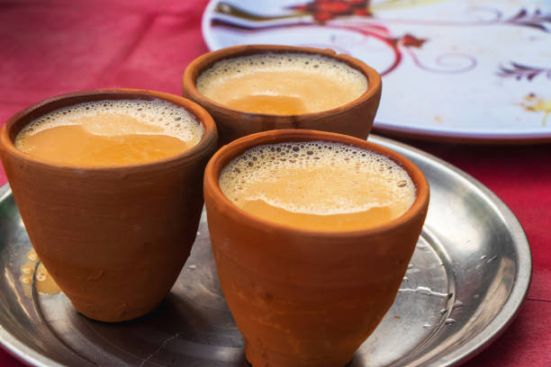

Chai

Description
Masala chai is a popular beverage throughout South Asia, originating in the early modern Indian subcontinent. Chai tea is made by brewing black tea in milk and water and then sweetening with sugar. Adding aromatic herbs and spices creates chai tea, although chai is often prepared unspiced.
Ingredients
- hot water
- hot milk
- ginger
Steps
- Add cloves, cardamom, cinnamon stick & black pepper to a mortar pestle or a spice grinder.
- Heat water in a pot.
- Bring this to a rolling boil and reduce the heat to medium. .
- Pour milk and add sugar
- Reduce the heat and simmer until the chai (tea) becomes dark, for about 2 min